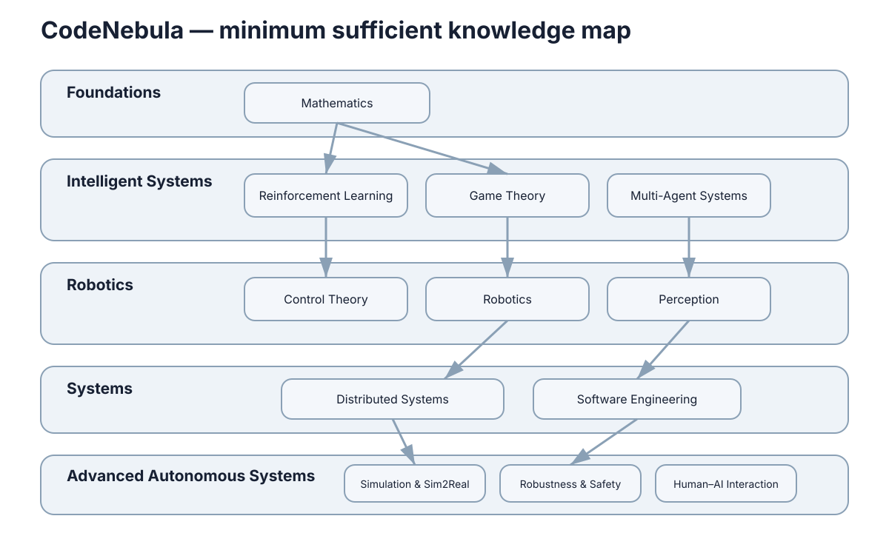

CodeNebula
CodeNebula 不是 AI 编程入门站，也不试图成为包罗万象的百科全书。它是一套面向智能系统研究与工程实践的最小充分知识地图：先回答方法为什么成立，再说明算法如何组织，最后进入工程接口与真实系统。

“最小充分”的含义是：只保留后续反复依赖、能够解释真实系统、或者删掉后会造成认知断层的内容。因此读的时候会遇到刻意的取舍——算法只保留能代表一类思想的方法，图片只用于解释几何关系、数据流与系统边界，代码只用于把公式落到实现。
课程结构
课程不强制一条线读到底，但领域之间存在真实的前置偏序：Foundations 是无前置的根，Decision & Learning 与 Robotics & Perception 是两条并列分支，Systems & Simulation 需要至少一条分支作为载体，Safety & Human Factors 则贯穿真实部署。
| 领域 | 包含 Section | 回答的问题 | 需要的前置 |
|---|---|---|---|
| Foundations | Mathematics, Control Theory | 系统如何表示、方法在什么条件下成立 | 无 |
| Decision & Learning | Reinforcement Learning, Game Theory, Multi-Agent Systems | 如何在交互中做序贯决策 | Foundations |
| Robotics & Perception | Robotics, Perception | 如何感知世界并让本体动起来 | Foundations |
| Systems & Simulation | Distributed Systems, Software Engineering, Simulation & Sim2Real | 如何让算法成为可运行、可观察、可恢复的系统 | 任意一个领域 |
| Safety & Human Factors | Robustness & Safety, Human–AI Interaction | 条件变化、组件失效、与人协作时如何保持可接受行为 | Robotics & Perception 优先 |
这一偏序可以写成一个依赖关系：若领域 \(D_i\) 是 \(D_j\) 的前置，记 \(D_i \prec D_j\)，则合法阅读顺序就是该偏序的一个线性扩展。
| 领域 | 章数 | 约页数 | 是否可跳过 |
|---|---|---|---|
| Foundations | 11 | 约 11 页 | 不建议 |
| Decision & Learning | 16 | 约 16 页 | 按方向 |
| Robotics & Perception | 10 | 约 10 页 | 按方向 |
| Systems & Simulation | 14 | 约 14 页 | 按方向 |
| Safety & Human Factors | 10 | 约 10 页 | 不建议 |
整门课程的规模约为
其中 \(n_D\) 是领域 \(D\) 的页数。若只想建立某一方向的可用能力，通常需要其中 30 页左右。
表里“章数”与“约页数”刻意取一致，目的是让读者在规划时间时有一个诚实的一阶估计，而不是被“章节很多”或“很快能读完”这两种错觉之一误导。
前置关系不是为了设置门槛，而是为了让后面的内容有落脚点。例如 Control Theory 里的稳定性概念会反复出现在 Robotics 的控制回路和 Safety 的降级策略中；Mathematics 里的概率语言会出现在 Perception 的估计与 Robustness 的分布变化里。缺少这些落脚点，后面的内容就只剩结论。
因此这张表更准确的用法是反向查：当你在某个章节读不下去时，回到这张表确认它的前置是否已经建立，而不是继续硬读。
五个领域各自解决的典型问题
每个领域存在的理由，是它解决了一类别的领域不解决、又无法回避的问题。下面按“领域 → 典型问题 → 缺失后果”给出导航级的对应关系。
| 领域 | 它解决的典型问题 | 缺失后会怎样 |
|---|---|---|
| Foundations | 如何把系统写成可分析的状态模型、如何判断反馈是否稳定 | 后续方法只有实现，没有成立条件 |
| Decision & Learning | 如何在不确定与交互中做序贯决策、多主体如何协调 | 会把“规划”当成一次性求解 |
| Robotics & Perception | 如何从传感器获得位姿、地图与环境理解 | 算法无法落到有噪声的物理世界 |
| Systems & Simulation | 如何让算法在真实时延、故障与部署下运行 | 单机 demo 无法变成系统 |
| Safety & Human Factors | 条件变化、组件失效、与人协作时如何保持可接受行为 | 事故只在最坏情况暴露 |
需要强调的是，这不是“先学完再实践”的顺序说明，而是“最短可交付”的依赖说明：当某个问题无法定位是哪一层出错时，通常是因为对应的领域没有被建立。
| 领域 | 入门信号 | 常见卡点 |
|---|---|---|
| Foundations | 能把一个控制问题写成状态空间与目标函数 | 把线性假设忘在推导之外 |
| Decision & Learning | 能写出一个 MDP 并解释 Bellman 递推 | 混淆值函数与策略 |
| Robotics & Perception | 能解释一次估计更新的依据 | 忽略传感器标定与坐标系 |
| Systems & Simulation | 能画出组件之间的数据流与失败点 | 忽略时延与时钟一致性 |
| Safety & Human Factors | 能写出系统的责任矩阵与恢复路径 | 把安全当成事后补的功能 |
一个领域被真正建立起来的标志，不是记住术语，而是能对领域的典型问题给出机制层面的解释，并知道它在什么条件下失效。 所以判断自己是否“学过”某个领域，最省事的检验方法是尝试回答它那一行的典型问题，若只能复述结论而说不出条件，说明这一层还需要补。 这也解释了为什么本课程把失败模式表放在与公式同等的位置：条件与边界才是可迁移的部分。
各 Section 的一句话定位
下面这张表只做导航级描述：每个 Section 解决什么问题、规模多大、前置是什么。具体的推进逻辑请进入该 Section 的导读页。
| Section | 一句话定位 | 约页数 | 前置 |
|---|---|---|---|
| Mathematics | 提供空间、变化、不确定性与优化的共同语言 | 约 6 页 | 无 |
| Control Theory | 建立动态模型、反馈与稳定性分析 | 约 5 页 | Mathematics |
| Reinforcement Learning | 序贯决策的价值迭代与策略优化 | 约 6 页 | Mathematics |
| Game Theory | 策略相互影响下的均衡与最优应对 | 约 5 页 | Mathematics |
| Multi-Agent Systems | 多主体的协调、通信与任务分配 | 约 5 页 | Game Theory, RL |
| Robotics | 连接模型、估计、SLAM、规划与控制 | 约 5 页 | Control Theory |
| Perception | 图像、特征、检测、深度、点云与多模态 | 约 5 页 | Mathematics |
| Distributed Systems | 通信、时间、一致性、容错与中间件 | 约 5 页 | 无 |
| Software Engineering | 需求、模块、版本、测试与部署可靠性 | 约 5 页 | 无 |
| Simulation & Sim2Real | 物理仿真、传感器仿真与现实迁移 | 约 4 页 | Robotics |
| Robustness & Safety | 不确定性、分布变化、约束与故障 | 约 5 页 | Perception 优先 |
| Human–AI Interaction | 控制权、信任、共享自治与接管 | 约 5 页 | Robotics 优先 |
按性质还可以把 Section 分成两类，方便按当前需求选择入口：
| 类别 | 包含 Section | 阅读方式 |
|---|---|---|
| 偏理论 | Mathematics, Control Theory, Game Theory, RL, MAS | 建议顺序读并动手推导 |
| 偏工程 | Perception, Robotics, Distributed Systems, SE, Sim2Real | 建议带着具体系统问题读 |
| 横切 | Robustness & Safety, Human–AI Interaction | 建议在任一系统上手后随时回看 |
“横切”的含义是：它们不在依赖链的某一层，而是约束每一层。一个感知模块的鲁棒性、一个学习算法的分布外行为、一个机器人系统的接管策略，都是横切问题，无法通过只读某一层解决。 因此这部分章节更适合带着具体系统回看，而不是在没有任何工程对象时抽象地读完。
推荐阅读路径
路径不是固定路线，而是按目标裁剪的依赖子集。下表给出四条常用路径及其规模估计。
| 目标 | 建议顺序 | 大约页数 |
|---|---|---|
| 建立完整视野 | Foundations → Robotics & Perception → Decision & Learning → Systems & Simulation → Safety & Human Factors | 全部（约 61 页） |
| 做控制与机器人 | Mathematics → Control Theory → Robotics → Perception → Safety & Human Factors | 约 30 页 |
| 做学习与决策 | Mathematics → Reinforcement Learning → Game Theory → Multi-Agent Systems → Systems & Simulation | 约 30 页 |
| 做系统工程 | Foundations（略读）→ Robotics & Perception → Systems & Simulation → Safety & Human Factors | 约 35 页 |
| 只想补短板 | 直接进入对应 Section 的导读页，再按“下一步”链接继续 | 按需 |
路径规模可以直接相加得到：
因此当时间有限时，减少页数的正确方式是替换掉“当前方向用不到”的整条分支，而不是把每一章都读一半。
| 可用时间 | 建议范围 | 取舍 |
|---|---|---|
| 10 小时以内 | 一个方向领域 + 对应 Section 导读 | 不读实现细节 |
| 30 小时左右 | 两条分支 + Systems & Simulation 略读 | 跳过部分推导 |
| 长期跟进 | 全部领域，按需回看横切章节 | 保留公式与失败模式表 |
路径之间不是互斥的，实际阅读往往是“一条主线 + 若干按需插入的支线”。判断支线是否需要插入的标准很简单：如果当前章节的推导用到了你无法解释的符号或假设，就说明该支线需要补。 相反，如果只是暂时不知道自己会不会用到某个分支，可以先跳过——留白是这门课接受的设计，而不是缺陷。 每个路径的终点都不是“读完”，而是能对一个具体系统给出机制解释、量化的边界判断，以及一份可执行的排查顺序。
每章的组织方式
章节不是为了覆盖知识点列表，而是围绕一个主题逐层展开。典型结构是：核心结论 → 机制与公式 → 量化关系与对比表 → 失效模式与排查顺序 → 指向下一章。
| 章节部件 | 作用 | 建议读法 |
|---|---|---|
| 核心结论 | 先给出答案，避免边读边猜 | 必读，用于判断是否需要深入 |
| 机制与公式 | 说明结论成立的机制条件 | 推导可跳，条件不可跳 |
| 量化关系与对比表 | 把定性判断变成可比较的量 | 用于设定自己的参数范围 |
| 失效模式表 | 给出“现象 → 原因 → 先验证什么” | 调试时直接查表 |
| 下一步链接 | 指向前置或后续章节 | 用于补齐依赖 |
因此每个 Section 的导读页（本节首页）都值得先读一遍：它给出该领域的推进逻辑、概念地图以及与其它章节的接口，能避免在遇到问题时才回头补前置。
若把一章的阅读成本记为小节数 \(m\) 与公式密度 \(d\) 的函数，则可粗略写成
它解释了为什么公式密集的章节即使小节少也需要更多时间——理解的前提是逐项确认适用条件，而不是扫过符号。
这也意味着“先快读一遍、再按需精读”对这种内容结构是可行的：第一遍建立骨架，第二遍只在真正用到的节点上补足推导。 需要提醒的是，骨架与细节不能颠倒：如果第一遍就试图记住所有公式，反而会漏掉每章真正想表达的那一个结论。 判断“骨架是否建立”的方法也很直接——能否只用一个句子说出这一章回答了什么，并把它的失败模式表复述成排查步骤。 能做到这两件事，才说明这一章从“读过”变成了“可用”。
使用建议
- 先读导读：每个 Section 首页说明“这一节解决什么问题”，比直接进入某一章更省时间。
- 关注条件：公式旁边通常会写出适用条件与失效边界，这些条件和公式同样重要。
- 用失败模式表自查：多数章节末尾有“现象 → 最可能原因 → 先验证什么”的表，可直接用于调试。
- 接受留白：这里不铺算法谱系，也不提供某个框架的完整教程；需要时按章节末尾的链接进入更专门的材料。
| 常见误区 | 更有效的做法 |
|---|---|
| 从算法清单挑最热的读 | 先确定要解决的问题属于哪个领域 |
| 跳过数学直接看实现 | 至少掌握符号含义与假设 |
| 只读公式不看失败模式 | 两者一起读，条件与结论同等重要 |
| 一次读完所有领域 | 按目标裁剪依赖子集，留出实践时间 |
上面四条误区有一个共同结构：它们都把“读完”当成目标，而忽略了后面需要反复回看。把链接与失败模式表当成手册入口，比记住某一页的结论更接近这门课的设计意图。
| 使用阶段 | 建议动作 | 产出 |
|---|---|---|
| 进入前 | 读目标 Section 的导读页 | 知道本节解决什么问题 |
| 阅读中 | 对照公式的适用条件 | 明确边界而非记忆 |
| 实践时 | 查失败模式表 | 可执行的排查顺序 |
| 收尾 | 顺着“下一步”链接延伸 | 补齐前置或进入下一层 |
把这张表当作使用说明而不是要求，它的价值在于让你在每一步都知道自己该产出什么，而不是读过就算完成。
领域之间的接口与横切主题
五个领域之间并非只有垂直依赖，还有大量横向接口。横切主题的特点是：它们不归属于任何单一领域，却会在每个领域里以不同形式出现，一旦被忽略就会在集成阶段集中爆发。
| 横切主题 | 主要出现位置 | 不处理的后果 |
|---|---|---|
| 时延与实时性 | 控制回路、分布式系统、人机交接 | 理论正确的策略在时间上不可行 |
| 不确定性表达 | 概率与估计、感知、鲁棒性与安全 | 决策缺少可信的置信度依据 |
| 表示与坐标系 | 数学、机器人、感知、仿真 | 模块间几何关系错位 |
| 失效与降级 | 控制、分布式系统、安全与人因 | 单点失效放大为系统失效 |
这些接口对应的入口链接如下，导航级地标记了各自最需要被前置建立的部分：
| 接口 | 建议入口 | 你要带走什么 |
|---|---|---|
| 表示与数学语言 | Mathematics | 空间、概率与优化的统一符号 |
| 反馈与稳定性 | Control Theory | 回路与稳定条件 |
| 序贯决策 | Reinforcement Learning | 状态、收益与更新规则 |
| 策略互动 | Game Theory | 均衡与最优应对 |
| 多主体协调 | Multi-Agent Systems | 通信与任务分配 |
| 本体与运动 | Robotics | 从模型到规划控制 |
| 环境理解 | Perception | 从图像到位姿与语义 |
| 系统与容错 | Distributed Systems | 时延、一致性与故障处理 |
| 工程化与部署 | Software Engineering | 接口、测试与可靠性 |
| 仿真与现实迁移 | Simulation & Sim2Real | 仿真到真机的差距来源 |
| 鲁棒与安全 | Robustness & Safety | 不确定性、约束与故障 |
| 人机协作 | Human–AI Interaction | 控制权、信任与接管 |
判断横切主题是否被处理过，可以用一个简单问题自检：当某个条件变化（时延增大、置信度下降、坐标系不一致、组件失效）时，系统会表现出什么？答不上来，通常说明对应的横切接口还没有被设计。
内容边界
每个 Section 只保留能连接上下游的核心概念。代码只出现在工程实现与真实系统；图片优先使用几何解释图、状态空间图、概率关系图、优化曲面图、架构图、数据流图、系统连接图和实验结果图。
下一步：第一次来建议从 Mathematics 开始；若目标是做机器人系统，可直接进入 Robotics 的导读页确认前置需求；若关注人机协作，则可从 Human–AI Interaction 进入。